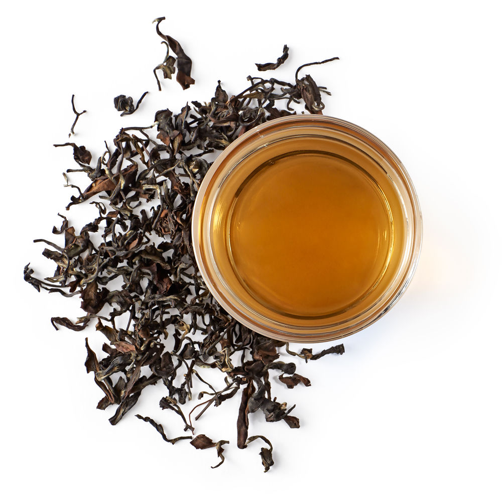

-
Smooth, bright orchid aroma throughout with a clean, refreshing finish.Ancient Buddhist Monks trained monkeys to gather the youngest leaves from the tip-top of wild tea trees. Now with the deft hand-plucking of the broken leaves that unfurl to create a light, orchid aroma, and the highest grade of oolong in the world.
Monkey Picked
-

Enjoy the complex flavors of this incredible oolong tea. This famous Chinese tea was one of the first oolongs exported to England, where it was highly praised by the Queen. Young, tender buds and leaves are gently hand-plucked, withered and oxidized, resulting in a distinctive multicolored appearance.
Silver Tips
-
Well balanced infusion of crisp orchid and sweet jasmine with a clean finishThis most precious of green oolong teas is made more delicate with the gentle scenting of fragrantly sweet jasmine. Creating a hint of perfumed wonder, this sublime and aromatic hand-rolled tea is nothing less than a cup of transcendental bliss.
Jasmine
-

Robust infusion full of rich spice notes from cinnamon, ginger, pepper and clovesThe rich, heady spices of India mingle with the royal splendor of oolong tea in this blend inspired by the legendary Spice Route. Cinnamon, ginger, cloves, carob and cardamom lead the sensory journey that begins with the first aroma of this robust chai.
Maharaja Chai
-
Small-batch techniques create a standout oolong teaGrown high in the Nantou mountains of Taiwan, this world-renowned oolong tea is hand-plucked from the first new growth in early spring. Each bud and leaf is carefully oxidized, rolled and fired in small batches.
Tung Ting
-
Discover a unique oolong tea from Jeju Island.This flavorful tea is grown in rich, volcanic soil and plucked during the earliest spring harvest. Where most Korean teas are fired and steamed, these leaves are semi-oxidized to produce a complex oolong flavor profile.
Korean Baked